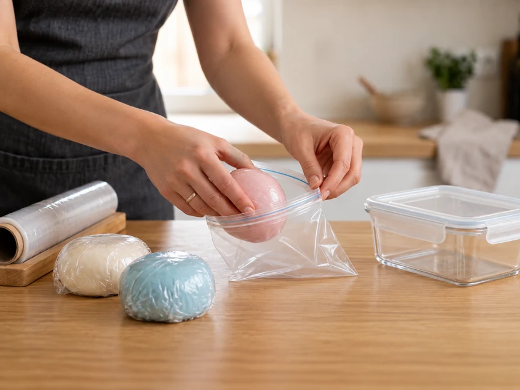
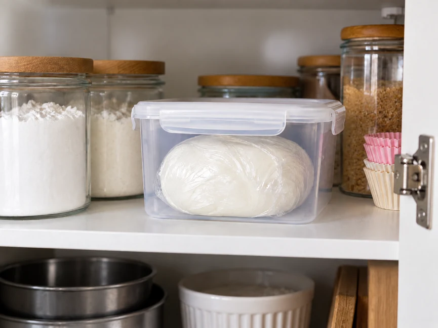
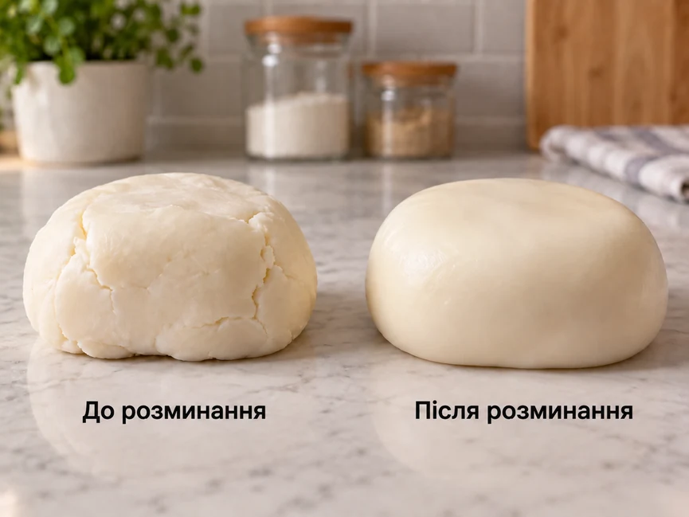
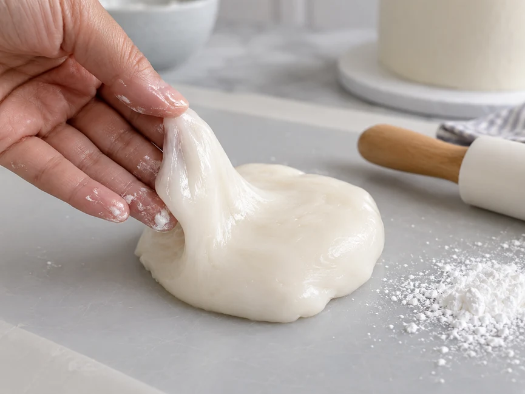

Мастика швидко реагує на повітря, вологу й температуру. Якщо залишити її відкритою, поверхня підсохне й покриється скоринкою. За неправильного зберігання маса може стати надто твердою, липкою або втратити пластичність.
Одного універсального способу зберігання для всіх видів мастики немає. Умови залежать від складу й конкретного продукту. Для покупної мастики насамперед орієнтуйтеся на рекомендації виробника, а для домашньої — на склад і рецепт.
Коротко: як правильно зберігати мастику
- Не залишайте мастику відкритою.
- Щільно загорніть залишок у харчову плівку.
- Додатково покладіть його в пакет або герметичний контейнер.
- Тримайте мастику подалі від сонця, тепла й зайвої вологи.
- Не ставте її в холодильник і не заморожуйте без потреби.
- Для покупної мастики дотримуйтеся умов, зазначених на упаковці.
- Перед роботою з охолодженою мастикою дайте їй спокійно нагрітися до кімнатної температури.
Як правильно упакувати мастику

Головний ворог відкритої мастики — повітря. Навіть невеликий шматок досить швидко починає підсихати з поверхні.
Зберіть залишок у щільну грудку або кулю й добре загорніть у харчову плівку. Намагайтеся, щоб між плівкою й мастикою залишилося якомога менше повітря. Потім покладіть згорток у пакет із застібкою або герметичний контейнер.
Для деяких видів готової мастики виробники рекомендують перед пакуванням злегка змастити поверхню кондитерським жиром. Але використовувати цей прийом для будь-якої мастики не варто — спочатку перевірте рекомендації для конкретного продукту.
Категорично не робіть!
Не залишайте невикористаний шматок лежати на столі, поки працюєте з іншою частиною. Загортайте його одразу. Якщо поверхня встигне сильно підсохнути, повернути колишню еластичність буде складніше.
Де зберігати мастику

За кімнатної температури
Для багатьох видів готової цукрової мастики це основний варіант зберігання.
Оберіть сухе місце подалі від батареї, духовки, сонячного вікна та інших джерел тепла. Упаковка має залишатися щільно закритою.
У холодильнику
Холодильник підходить не для будь-якої мастики.
Для одних готових складів виробники рекомендують кімнатну температуру, для інших допускають або вимагають зберігання в холодильнику після відкриття.
Важливо!
Не користуйтеся правилом «мастику завжди потрібно зберігати в холодильнику». Спочатку перевірте умови на упаковці конкретного продукту.
Скільки зберігається мастика
Одного строку для всіх видів мастики немає.
Строк зберігання залежить від складу, наявності консервантів, температури й герметичності упаковки. Навіть у продукції одного виробника різні види мастики можуть мати різні строки зберігання.
Для покупної мастики орієнтуйтеся на строк придатності й умови після відкриття, зазначені виробником. Після відкриття зручно одразу написати дату на упаковці.
Для домашньої мастики строк залежить від рецепта. Особливо це важливо, якщо у складі є інгредієнти, які самі по собі потребують зберігання в холодильнику.
Корисно знати!
Краще орієнтуватися на конкретний рецепт або упаковку, ніж використовувати універсальну цифру з інтернету.
Чи можна заморожувати мастику
Не будь-яку.
Деякі виробники прямо не рекомендують заморожувати мастику, оскільки після розморожування вона може змінити консистенцію.
Тому пораду «покласти залишки в морозильну камеру на кілька місяців» не можна застосовувати до всіх видів мастики.
Якщо заморожування допускається виробником або конкретним рецептом, дотримуйтеся саме цих рекомендацій. Якщо таких вказівок немає, краще обрати звичайний спосіб зберігання.
Як зберігати пофарбовану мастику
Пофарбовану мастику пакують так само ретельно, як і білу: щільно закривають від повітря й кладуть у герметичну тару.
Додатково захищайте її від світла. Деякі харчові барвники з часом можуть змінювати відтінок під дією прямого сонця й яскравого штучного освітлення.
Якщо ви підготували кілька кольорів, загорніть кожен шматок окремо. Так вони не будуть торкатися один одного й випадково забарвлювати сусідні шматки.
Як зрозуміти, що мастика зіпсувалася

Тут важливо розрізняти дві речі: чи зіпсувалася мастика як продукт і чи залишається вона придатною для роботи.
Ознаки можливого псування:
- виразно неприємний або сторонній запах;
- незвичні плями або зміна кольору, не пов’язані з барвником;
- помітна зміна смаку;
- ознаки псування інгредієнтів, що входять до складу.
Таку мастику краще не використовувати.
А ось невелика сухість, тверда поверхня або втрата пластичності самі по собі ще не обов’язково означають псування.
При цьому мастика може залишатися нормальною за складом, але вже погано підходити для декору. Якщо вона вкрилася товстою сухою скоринкою, сильно кришиться й не збирається назад в еластичну масу, працювати з нею буде складно.
Що робити, якщо мастика після зберігання стала твердою

Якщо мастика була в прохолодному місці, спочатку дайте їй нагрітися до кімнатної температури.
Потім добре розімніть невеликий шматок руками. Часто тепла рук достатньо, щоб маса знову стала м’якшою й пластичнішою.
Для деяких видів мастики можна додати зовсім трохи кондитерського жиру й знову добре розім’яти масу.
Категорично не робіть!
Не додавайте одразу воду або велику кількість інших інгредієнтів. Так легко перетворити щільну мастику на надто м’яку й липку.
Якщо маса сильно пересохла, кришиться й не збирається в пластичну грудку, повністю відновити її може вже не вдатися.
Що робити, якщо мастика стала липкою або вологою

Спочатку не поспішайте додавати цукрову пудру.
Якщо мастика була холодною, на її поверхні могла з’явитися волога через різницю температур. Дайте масі трохи постояти за кімнатної температури й тільки потім оцініть її стан.
Якщо мастика справді залишається надто м’якою й липкою, коригуйте консистенцію поступово. Цукрову пудру або інший допустимий за рецептом сухий компонент додавайте потроху, щоразу добре вимішуючи масу.
Важливо!
Якщо одразу всипати надто багато пудри, після стабілізації мастика може стати щільною й почати тріскатися.
Як зберігати залишки мастики після роботи
Закінчили прикрашати торт — одразу приберіть залишки.
Чисту мастику кожного кольору зберігайте окремо. Сформуйте щільний шматок, загорніть його в харчову плівку й покладіть у герметичний пакет або контейнер.
Обрізки, на які потрапили крем, крихти або інші продукти, краще не змішувати назад із чистою масою.
Якщо зберігаєте кілька видів мастики, підпишіть упаковку й дату відкриття. Це позбавить сумнівів через кілька тижнів.
Якщо йдеться вже не про саму мастику, а про готовий декор, умови будуть іншими. Докладніше — у статті «Як зберігати фігурки з мастики».